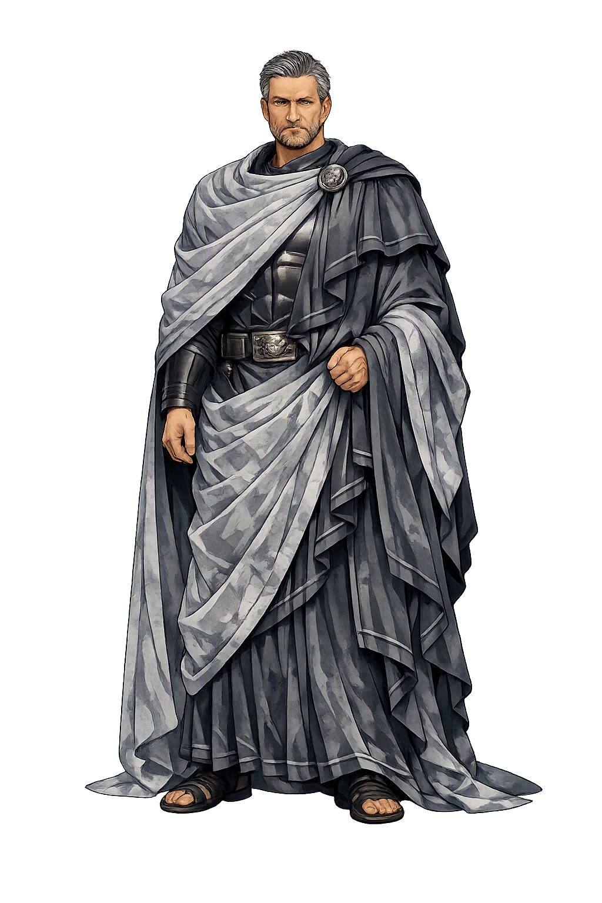

Stories of Gravitas
Gravitas has no cult, no temple, and no goddess — it is a Roman virtue, not a Roman deity. This temple therefore treats the tradition's great set-pieces of the quality as its lore: the dictator who gave power back, the exile who kept his face steady in shipwreck, the funeral masks that made dignity hereditary, and the schoolroom that made it teachable.
In 458 BCE a Roman army under the consul Minucius lay trapped in a mountain defile by the Aequi, and the Senate did what Roman law allowed in mortal danger: it named a dictator, a single magistrate above all appeal, to save the state. The envoys found their man behind his plough on a four-acre farm across the Tiber, Lucius Quinctius, called Cincinnatus from his uncut hair. He wiped off the dust, put on the purple-bordered toga, crossed the river, mustered the citizens, marched through the night, defeated the Aequi in a single action, and sent the rescued consul home in triumph — and then, having held absolute power for barely a fortnight, he abdicated it and went back to his field. Livy tells the whole episode (3.26–29) without a single boastful word from its hero.
The story is Rome's proof-text of gravitas: the office did not make the man heavy, the man made the office safe. Power held without hunger is the only kind a republic can dare to create, and Rome told this story about its own greatest emergency power precisely to warn itself against ever loving it.
When Aeneas came up from the shore of Libya after the storm that had smashed his fleet, seven ships left of twenty, he found his own crews already gathered, grieving for the lost and for themselves. Virgil gives the scene its unforgettable line: spem vultu simulat, premit altum corde dolorem — 'he feigns hope on his face, and presses his deep grief down in his heart' (Aeneid 1.209). There is no lament, no show of feeling for the company to lean on and sink by. He counts the ships, names the missing, takes the bearings, and speaks to each man's fear as if it were a task on a list.
The line became the schoolbook definition of the Roman bearing, and the schoolbooks were right to seize it. Gravitas is grief made useful: the discipline of carrying catastrophe internally, at personal cost, so that the people who depend on you can stand on your steadiness instead of your pain. What the face shows is not the truth of the heart but the service of it.
The Greek historian Polybius, explaining to his readers how Rome kept producing great men, stops at an institution no Greek city had: the wax portrait masks, the imagines, kept in cupboards in the atrium of every noble house, each modelled from the face of a distinguished ancestor (6.53–54). When a man of the family died, the masks were brought out, fitted on actors, and worn in procession to the Forum; seated in a row of curule chairs, the dead watched the living deliver the funeral speech, and the newest mask took its place in the cupboard for the next generation.
Polybius saw the psychology exactly: a young Roman could not walk past his own atrium without seeing the face of every standard he might be measured against, and the family could not feast its ancestors without restaging its accumulated weight. Rome made dignity hereditary theatre. Gravitas was never merely a mood; it was an inheritance, an audience, and a debt, worn literally on the face of the house.
Rome's complete art of speaking was taught in the schools Quintilian codified, and it begins with a startling admission: technique is not the point. The famous definition of the true orator — vir bonus dicendi peritus, 'the good man skilled in speaking' (Institutio Oratoria 12.1.1) — makes moral weight a precondition of eloquence, not a decoration on it. Books 11 and 12 of the Institutio then anatomize the bearing that carries the words: the voice modulated low and firm, the gesture economical, the face composed, the whole person arranged so that nothing in the delivery contradicts what the case deserves.
The teaching survives in our word 'deportment.' In Rome, speaking in public was a public trust: the court, the Senate, and the crowd were owed a person whose words pressed down on the matter rather than floated above it. Gravitas is the weight that keeps eloquence from becoming the art of saying anything — the ballast without which the most skilled tongue is merely fast.
Weight
Gravitas is the Roman virtue of weight: the seriousness of bearing, word, and office that made a citizen worth listening to. From gravis, 'heavy,' it names the quality by which speech, gait, and judgment press down on a matter — and by which a person becomes someone the republic can safely trust with power.
Cicero's ideal orator speaks with weight: authority comes not from volume but from the bearing behind the sentence (De Oratore; Orator).
Livy's dictator took emergency power, saved the army, and gave the power back — gravitas as power carried without hunger (Livy 3.26–29).
Aeneas 'feigns hope on his face and presses his grief deep in his heart' (Virgil, Aeneid 1.209) — the inner weight that steadies others in ruin.
Gravitas is defined by its opposite: levitas, lightness — the fickleness the old Romans blamed when luxury rotted the state (Sallust, Catiline 3–13).
From the original script to the living URL
GRAVITAS
The name in its original Greek form. Gravitas (GRAVITAS) is attested in the source tradition — “Weight, importance”. Its original diacritics and script distinctions carry the full phonetic and orthographic weight of the source tradition.
gravitas
The plain gravitas form is identical to the Unicode restoration. Because this name is already written in Latin letters, no diacritics, stress, or script information were lost — only capitalization differs.
Gravitas
The Unicode restoration does not need to recover lost marks for Gravitas. Its value is canonical spelling and consistent cataloguing, not the reconstruction of erased orthography. The domain is readable as-is to both DNS and humanity.
Gravitas.com
This restoration is written entirely in ASCII letters — no Punycode encoding stands between Gravitas and the DNS. The domain reads identically to machines and to human eyes.
Owned, ideal, and ASCII forms of Gravitas
Gravitas
Restores GRAVITAS. The full Unicode restoration. gravitas.com is not in the PuniCodex collection — it is watched for release; if it drops, this temple upgrades to an owned flagship.
How Gravitas was spoken
How Gravitas travels from ancient script to the modern URL
Every culture answers, sooner or later, the question Rome put into one word: what makes a person's word weigh anything? The Roman answer was practice rather than theory — the plough returned to, the grief pressed down, the mask in the atrium, the voice held low — and its force comes from that. Gravitas is not a talent and not a pose. It is the visible sediment of repeated choices to carry more than one strictly has to, until carrying becomes shape.
Enter Extended Lore